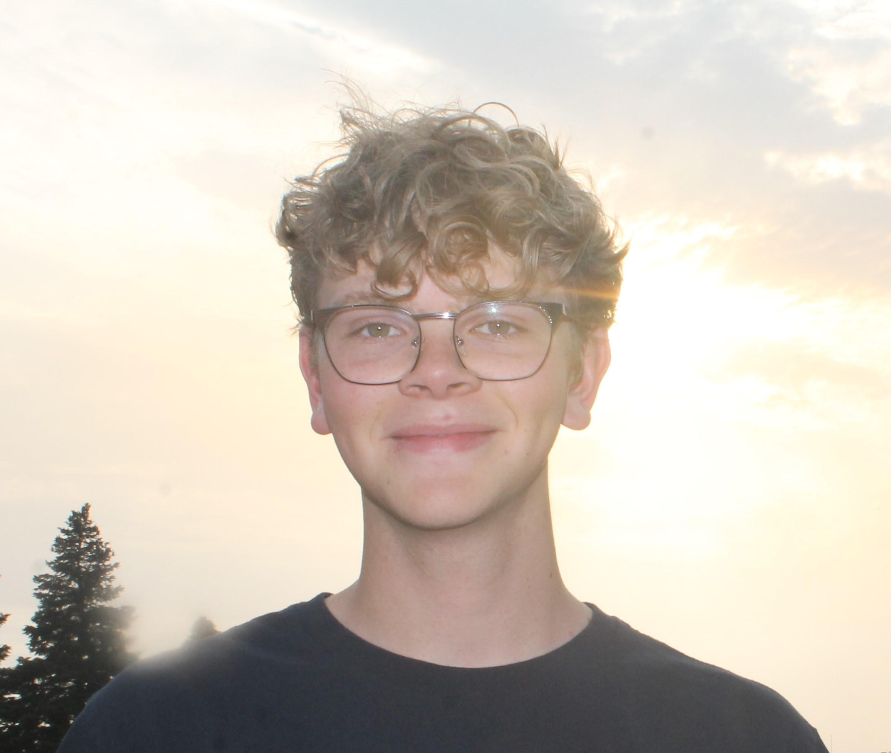
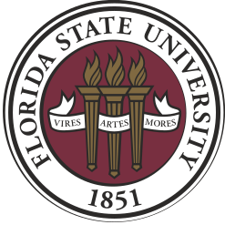
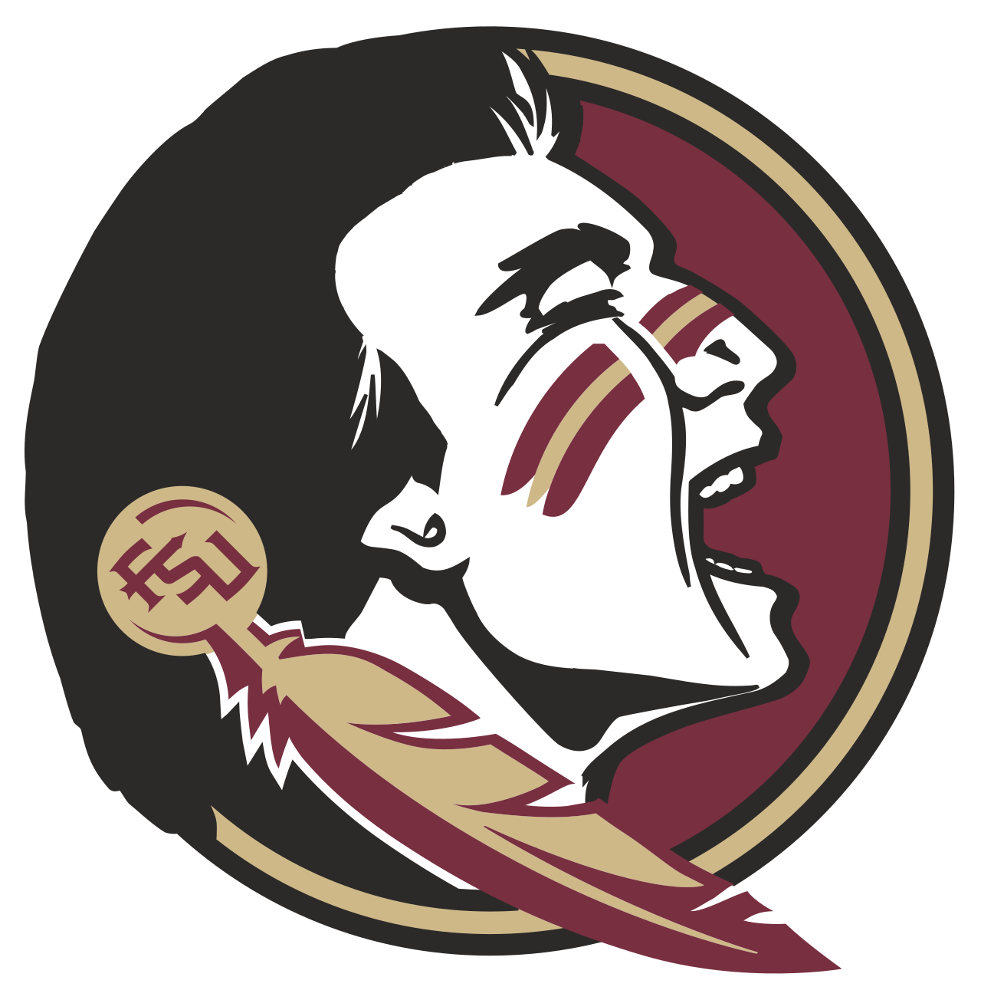
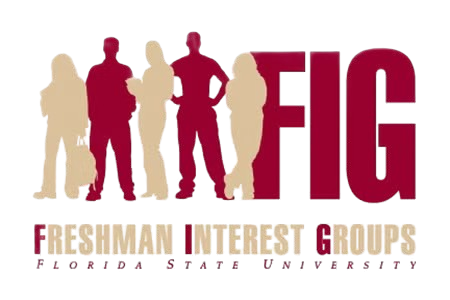
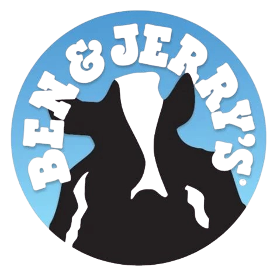
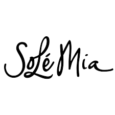
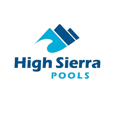

Hello, welcome to my portfolio page!
I am a Computer Science junior at Florida State University with a 3.97 GPA and experience in C++, C, Linux, networking, multithreading, and concurrency. My work has focused on systems-oriented software, including a multithreaded missile-defense simulator and Linux kernel development.simulator. As an undergraduate researcher in FSU’s Networked AI Systems Lab, I co-authored work on resilient distributed LLM inference for UAV swarms, including the design of a fault-recovery mechanism for resource-constrained airborne systems. I am particularly interested in software engineering opportunities involving mission software, real-time systems, networking, and defense or aerospace applications.
Education

Florida State University
Tallahassee, FL
December 2028
B.S. Computer Science. GPA: 3.97
Graduate-Level Coursework: Advanced Operating Systems (COP5611), Artificial Intelligence (CAP5605)
Relevant Undergraduate Coursework: Operating Systems, Computer Networks, Data Structures & Algorithms, Computer Organization, Generic Programming I/II, Advanced Programming in Java
President's List: Fall 2024, Spring 2026
Dean's List: Spring 2025, Fall 2025
Research Experience

Networked AI Systems Lab
Tallahassee, FL
October 2025 - August 2026
As a member of the lab, I conducted research at the intersection of artificial intelligence, distributed systems, edge computing, and networking. My primary project focused on AeroKV, a resilient distributed LLM inference framework for UAV swarms, using pipeline parallelism, KV-cache management, pre-staged recovery state, and fault-tolerant model deployment to maintain inference after UAV loss under strict memory, bandwidth, and energy constraints. I also contributed to a multi-LLM behavioral health coaching system that used multiple agents, custom state representations, persistent session memory, and automated dialogue steering to support longitudinal user interactions and improve continuity across sessions.
Publications:
Longitudinal Behavioral Health Coaching with Dual LLM Agents: Multi-Scale Summaries and Automated Dialogue Steering, CHASE 2026
Authors: Hansong Zhou, Zachary Skalski-Fouts, Linh Nguyen, Carson Rivera, Bonnie Spring, Hongyu Miao, Xiaonan Zhang
This project was to developed a multi-LLM behavioral health coaching system designed to support long-term behavior change across multiple sessions. The system uses a Coaching State Tracker, summary agent, and steering signal generator to preserve user goals, barriers, and commitments while guiding the dialogue agent toward proactive follow-up. We evaluated this architecture against baseline systems and found stronger performance in continuity, agenda control, coaching efficiency, and reduced repetitive loop behavior.
Contributions:
- Developed evaluation metrics for Section 4.4: Efficiency of Longitudinal Progression, including methods for identifying redundant loops, constructive revisiting, and whether the agent converted dialogue into actionable coaching progress.
- Developed evaluation metrics for Section 4.5: Cross-Session Continuity, focused on whether the agent remembered and reused prior user goals, barriers, plans, and commitments across sessions.
- Assisted in the design of the participant/evaluation protocol, including multi-session user flow, progress updates, session limits, and follow-up expectations.
- Wrote and revised portions of the paper’s introduction, especially framing the need for longitudinal behavioral coaching, proactive agenda control, and continuity in LLM-based systems.
- Performed substantial editing across the paper, including clarity revisions, structure feedback, terminology checks, and evaluation-section critiques.
Other projects:
AeroKV: Lifetime-Aware Resilient Collaborative LLM Inference for UAV Swarms, Submitted to MILCOM 2026 (In Review)
Authors: Hansong Zhou, Zachary Skalski-Fouts, Linh Nguyen, Linke Guo, Xiaonan Zhang
This project developed AeroKV, a resilient distributed LLM inference framework for UAV swarms operating under memory, communication, and energy constraints. AeroKV distributes model execution and KV-cache state across multiple UAVs, using bounded layer overlap, periodic KV-cache snapshots, and post-failure pipeline reconfiguration to recover from aircraft loss. We evaluated AeroKV against Reactive recovery, Live Replica, and KV Streaming baselines and found that it reduced recovery time, maintained lower resource overhead, and preserved substantially greater post-failure inference capacity, extending expected mission lifetime by up to 76%.
Contributions:
- Co-developed AeroKV’s boundary state sharing mechanism, defining how intermediate activations and partial KV-cache state could be pre-staged across neighboring UAVs to support recovery after aircraft loss.
- Developed an early parallel recovery design in which neighboring UAVs reconstruct different portions of a failed UAV’s assigned inference layers using pre-staged state.
- Contributed to the system model and problem formulation, organizing the resilience architecture, design variables, constraints, and relationship between pre-failure provisioning and post-failure recovery.
- Assisted with debugging and validating the event-driven simulation environment by running baseline experiments, inspecting token- and UAV-level traces, and identifying incorrect simulation behavior.
- Wrote and analyzed the experimental evaluation, comparing AeroKV against Reactive, Live Replica, and KV Streaming baselines and explaining its improvements in recovery performance, resilience overhead, and expected mission lifetime.
Projects
Missile Defense Simulator GitHub
- Applied the software development lifecycle through planning, Jira requirements tracking, system design, and implementation for radar, command-and-control, launcher, interceptor, and threat components.
- Engineered a multithreaded backend using Boost.Asio/Beast, WebSockets, thread-safe queues, and JSON messaging to coordinate real-time simulation state between modular components and the operator interface.
- Built and integrated a real-time visualization interface using JavaScript, HTML, and CSS, while managing dependencies and reproducible Windows builds with CMake, vcpkg, and Git.
Multithreaded Elevator Control Module GitHub
- Developed a custom Linux Kernel module using C to implement an elevator scheduling system
- Added new system calls to the kernel, demonstrating proficiency in compiling, configuring, and debugging Linux environments
- Applied concurrency control and thread synchronization using mutexes and kernel threads to manage shared resources
- Gained hands-on experience with low-level OS design, process scheduling, and system-level resource management
Work Experience

Freshman Interest Group Leader
Tallahassee, FL
August 2026 - Present
- Selected as an Engage 100 Group Leader to independently facilitate 2 Computer Science/Engineering colloquium sections, supporting up to 30 first-year students through class leadership, mentoring, and student-success monitoring.
- Developed technical-career programming for first-year students covering software engineering internships, technical resumes, interview preparation, research involvement, and career pathways across defense, aerospace, embedded systems, fintech, healthcare, and core technology sectors.
- Designed and facilitated AI-focused learning activities on responsible AI use, academic integrity, programming fundamentals, and AI-assisted study strategies, emphasizing preparation for advanced CS coursework, research, and graduate study.
Publix Supermarkets
Tallahassee, FL
July 2024 - September 2024
- Operate deli equipment such as meat slicers and fryers while adhering to safety guidelines
- Collaborated in teams to prepare and package hundreds of deli meats, cheese, and ready-to-go meals
- Effectively navigated through a large storage system
- Assisted in several areas of the deli, such as the kitchen, hot foods counter, subs counter, and fresh slice demonstrating versatility and adaptability

Ben & Jerry's
Hollywood, FL
December 2021 - June 2024
- Processed over 200+ daily transactions using POS systems with accuracy and efficiency under minimal supervision
- Communicated professionally with customers in person and through phone calls, delivering accurate information and high-quality service
- Organized workstations and inventory systems to maintain efficiency and accuracy in daily operations
- Trained and supported staff with an emphasis on teamwork, development, and long-term retention.

Solé Mia Lagoon Lifegaurd
North Miami, FL
August 2021 - March 2022
- Provide a protection standard to swimmers in a 7-acre, 16-million-gallon made-made lagoon
- Collaborate with team members through radio and hand signals
- Attend monthly training to master emergency medical procedures
- Organize shift changes and mandatory breaks

High Sierra Pools Lifegaurd
Burke, VA
May 2021 - August 2022